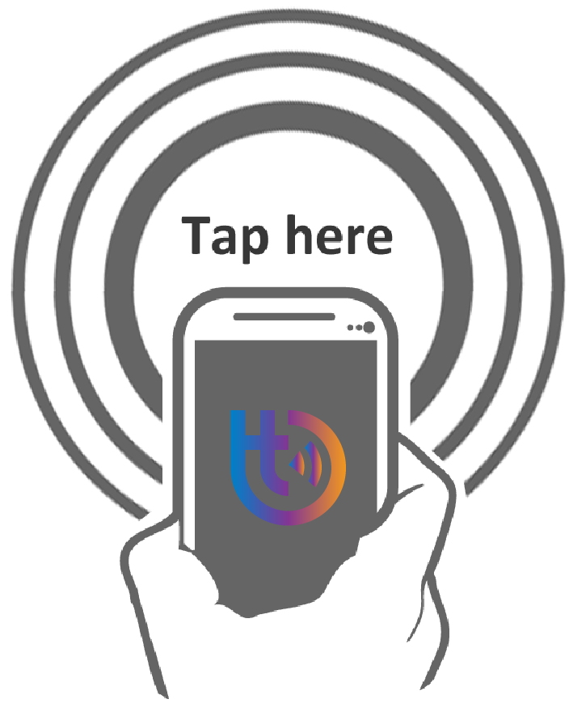

<!--
  Generated template for the AnimatetapPage page.

  See http://ionicframework.com/docs/components/#navigation for more info on
  Ionic pages and navigation.
-->

<ion-content padding>
    <div class="bluePair">
        <i class="fa fa-chevron-left" (click)="back()"></i>

      
      
        <div class="containers">
        <div class="svg-box">
        


          </div>
          <div class="circle delay1"></div>
          <div class="circle delay2"></div>
          <div class="circle delay3"></div>
          <div class="circle delay4"></div>
     </div>
     
          <p class="device">Approach TapTap Paired Device</p>
    </div>
</ion-content>
